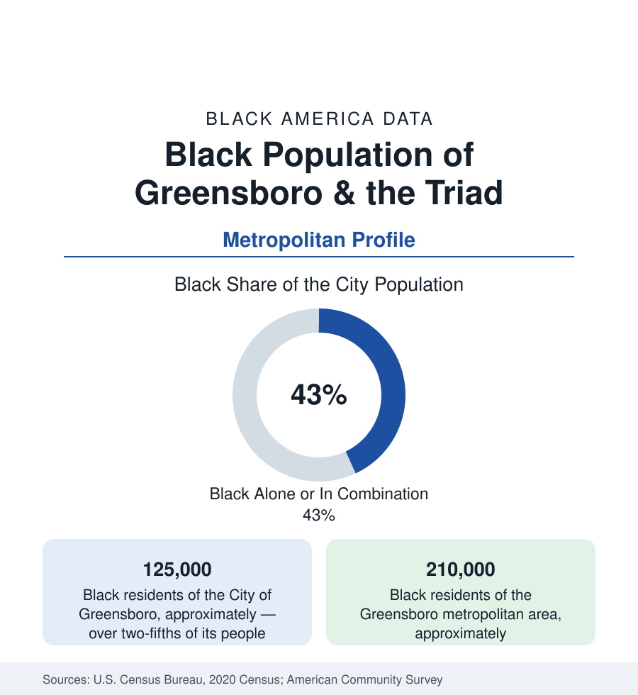

Black Cities
Black Greensboro: A&T, Bennett, and the Lunch Counter's City
Greensboro holds about 125,000 Black residents in the city and 210,000 across the Triad — home to the nation's largest HBCU. The census profile.

Greensboro holds about 125,000 Black residents within the city — Black alone or in combination, over two-fifths of its 301,000 people — and about 210,000 across the metropolitan area, with the wider Piedmont Triad (Winston-Salem and High Point) raising the regional total well beyond. Greensboro's place in Black America is fixed by two institutions of learning and one lunch counter: North Carolina A&T State University, the largest HBCU in the nation; Bennett College, one of only two historically Black women's colleges; and the Woolworth's on Elm Street where four A&T freshmen's 1960 sit-in re-ignited a movement. The data profile is that heritage's modern ledger.
East Greensboro and the University Anchors
The community's geography centers east and south: East Greensboro (the districts around the A&T campus — the university's neighborhood is the community's civic heart), the Warnersville and Asheboro Street corridors (the historic Black commercial spine), Dudley Heights and the south-side districts, with Bennett's campus in the southeast completing the collegiate map. A&T's scale is the profile's engine: enrolling in the range of 13,000 students — the largest HBCU enrollment in America, with the nation's top production of Black engineers in its celebrated college of engineering — it functions as the city's second downtown, its research growth (the joint Gateway Research Park with UNC Greensboro) the east side's development pole, and its homecoming (GHOE, 'Greatest Homecoming on Earth,' drawing tens of thousands) the region's largest annual Black cultural economy event. UNC Greensboro, across the tracks, adds a second large campus whose Black enrollment is substantial. The school data of Guilford County (the merged city-county system, among North Carolina's largest) carry the suburban distribution: the east and south suburbs' growth, High Point's own Black community (the furniture city's districts), and the magnet system's countywide draw.
The Triad's Economy
Greensboro's Black workforce runs through the Triad's post-textile economy: the mills and furniture plants that built the working class (Cone Mills, Burlington, the High Point furniture district) contracted in the familiar pattern, and the replacement economy — logistics on the I-40/I-85 cross (the airport's cargo hub, the distribution corridor), health care (Cone Health's system), the universities, banking and insurance operations, and HondaJet's and the aerospace cluster's growth — distributes its data. The indicators sit mid-Southern-pack: Black median income below Charlotte's and Raleigh's, homeownership rooted in the east-side subdivisions, poverty concentrated in the tracts the mill economy left. Winston-Salem, the Triad's other pole (some 25 miles west), holds its own major Black community around Wake Forest and Winston-Salem State, an HBCU — the Triad's two metros together hold three HBCUs and a Black population in the range of 350,000, a collegiate density few regions match.
The Sit-In's City
The Woolworth's sit-in of February 1960 — four A&T freshmen, Joseph McNeil, Franklin McCain, Ezell Blair Jr., and David Richmond, the A&T Four — is Greensboro's permanent place in the national record, and the site is now the International Civil Rights Center & Museum, the anchor of the downtown heritage economy. The data point for this reference is the pipeline the event reveals: the movement's Greensboro chapter was a student production of the HBCU system at full strength (A&T and Bennett students sustained the campaign), and the city's Black institutions — its churches, its colleges, the Greensboro generations since — form the continuity the museum commemorates. The city's modern civil data carry the ordinary ledger of a Black-plurality Southern city: a Black political presence in city and county government matching the population, the east-side investment argument (the A&T growth pole against the corridor's disinvestment) as the standing file.
Change and the Estimates
The estimates show steady growth — the metro's Black population gaining in the southern and eastern suburbs (and Whitsett and the I-85 corridor toward Burlington), A&T's enrollment setting records that feed the city's young-professional layer, and the logistics economy's expansion distributing its warehouse workforce along the interstate. The refugee resettlement layer (Greensboro is a resettlement city — Montagnard, African, and Burmese communities, the Montagnard population among America's largest) diversifies the east side's data in ways the census's Black categories only partly capture.
Reading the Greensboro Numbers
Greensboro is the HBCU-city profile at its purest: a Black community of 125,000 whose center of gravity is a campus — the largest Black university in America — and whose name the whole world knows from four freshmen and a lunch counter. The data describe a textile city converting to a knowledge-and-logistics one with its Black institutions, unusually, holding the deed to the future tense.
More in Black Cities
Black Atlanta: Population, Distribution, and Growth of a Black Metropolis
Metro Atlanta holds more than two million Black residents — roughly one in three, second only to New York. The suburban distribution, migration history, and composition of Black Atlanta in the census data.
Black New York: The Largest Black Population in America
The New York metropolitan area holds about 3.4 million Black residents — more than any metro in the nation — and the city itself about two million. The census profile.
Black Washington: The District and the Metro
The Washington metro holds about 1.6 million Black residents, and the District itself — long a majority-Black city — now records a Black share near 41 percent. The census profile.
Source: U.S. Census Bureau, 2020 Census; American Community Survey; Population Estimates Program.